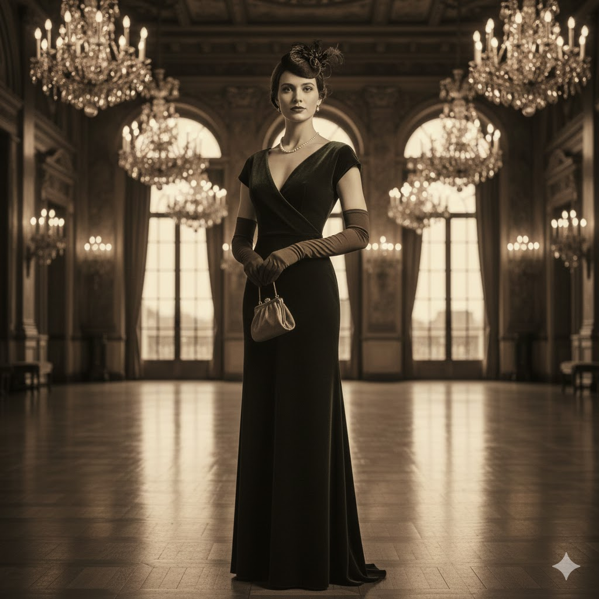

Women's Trends
The Return of Quiet Luxury: How to Master Subtle Elegance
By The Lajotam Editorial Team | October 10, 2025

Quiet Luxury isn't just a trend; it's a philosophy, a commitment to quality, tailoring,
and timeless design over loud branding. This movement is perfect for the modern Lajotam
woman who values sophistication and longevity in her wardrobe. It’s all about feeling
expensive, not just looking it.
Essential Pieces for Quiet Luxury
The core of this style relies on staples. Think perfectly tailored wool coats,
high-quality cashmere sweaters, and bias-cut silk skirts. The key is in the fabric and the
cut; look for materials that drape beautifully and craftsmanship that speaks for itself.
Colors remain neutral: creams, camels, navies, and charcoal grays.
Styling Tip: Focus on Texture
Since logos are out, focus on texture for interest. Pair smooth silk with nubby
cashmere, or rigid leather accessories with soft linen. This layering of textures provides
depth and visual richness without relying on flashy embellishments.
Men's Essentials
5 Timeless Suits Every Gentleman Must Own
By Marcus A. | September 28, 2025
A suit is the cornerstone of a refined man's wardrobe. Investing in these five classic
styles will ensure you are prepared for any occasion, from the boardroom to black-tie
events, upholding the Lajotam standard of sharp dressing.
1. The Navy Single-Breasted Suit
The most versatile suit you can own. It works equally well for business meetings and
semi-formal weddings. Choose a wool/cashmere blend for excellent drape and wrinkle
resistance.
2. The Charcoal Gray Suit
Perfect for serious business. Darker and more formal than navy, charcoal is ideal for
interviews or high-stakes presentations. It pairs beautifully with black or brown shoes.
3. The Black Tuxedo
A non-negotiable for black-tie events. This should be reserved exclusively for formal
evening wear. Ensure the fit is impeccable; tailoring is key.
4. The Light Gray or Summer Linen Suit
Essential for warm weather events. Lighter tones reflect heat and convey a relaxed,
sophisticated air during garden parties or summer functions.
5. The Pinstripe or Subtle Check Suit
For when you want to make a subtle statement. A fine pinstripe adds visual height, while
a subtle Prince of Wales check adds depth and character to your look.
Accessories
Layering Gold: How to Stack Necklaces Without Clutter
By Mummy J. | September 15, 2025

Layered necklaces are a fantastic way to personalize your look, but if done incorrectly,
they can end up looking tangled and messy. Mastering the art of the "neck mess" means
understanding proportion and purpose.
The Rule of Three (and Length)
Aim for three necklaces of distinctly different lengths. A general guide:
- Choker (14-16 inches): A delicate chain or a single stone.
- Medium (18-20 inches): Your statement pendant or meaningful charm.
- Long (24-30 inches): A heavy chain or lariat to anchor the look.
Mix Your Textures and Metals
Don't be afraid to mix different chain types, such as a chunky curb chain with a
delicate snake chain. While we focus on gold, incorporating silver or rose gold sparingly
can add a modern edge, provided it complements the dominant gold pieces.
Style Guides
The Definitive Guide to Luxury Footwear for Every Season
By Lajotam Style Editor | August 20, 2025
The foundation of any great outfit is the shoe. Luxury footwear investments prioritize
comfort and durability as much as style, ensuring you step out flawlessly in any season.
Autumn/Winter Essentials
Focus on rich textures like suede and deep-toned leather. Essential investments include
tailored ankle boots (in black or rich burgundy) and high-quality, weather-resistant
knee-high leather boots.
Spring/Summer Staples
This is the time for lighter materials and open designs. Invest in Italian leather
loafers for daytime elegance, and a pair of chic, monochromatic designer sandals for
evenings and vacations.
The Forever Shoe: The Classic Pump
Every woman needs a perfectly fitted nude or black leather pump with a heel height she
can manage all day. This piece is the ultimate chameleon, adapting to every dress code.
Care & Maintenance
Preserving Luxury: Tips for Long-Term Care of Silk and Leather
By Customer Service Team | July 1, 2025
Luxury pieces are investments that require careful upkeep. Proper maintenance ensures their
longevity and beauty, retaining their resale value and original allure.
Caring for Silk
Always follow the label: most fine silk requires professional dry cleaning. Store silk
garments hanging on padded hangers to prevent creases, and keep them away from direct
sunlight, which can fade the delicate dyes.
Caring for Leather Goods
Leather should be cleaned and conditioned at least twice a year using products
specifically designed for the leather type (e.g., patent, suede, calfskin). Store handbags
stuffed with paper (not newspaper, which can bleed ink) to help them maintain their shape.
Jewelry Storage
Store fine jewelry in individual soft pouches or compartmentalized boxes. This prevents
scratching and minimizes exposure to air and humidity, which can tarnish metals.
Fashion History
The Evolution of the LBD: From Coco Chanel to Modern Minimalism
By The Historian | June 5, 2025
The Little Black Dress (LBD) is arguably the most influential garment in fashion
history. Before the 1920s, black was reserved for mourning; Coco Chanel transformed it into
a symbol of modern chic and democratization.
The 1926 Revolution
When Vogue published a sketch of a simple, short black Ford, as they called it, dress by
Chanel in 1926, it instantly became the standard for elegant women worldwide. It was
accessible, versatile, and instantly flattering.
The Audrey Hepburn Effect
The LBD was cemented in popular culture by Audrey Hepburn in Breakfast at Tiffany's
(1961), wearing Hubert de Givenchy's sheath dress. This look elevated the LBD to the
ultimate symbol of sophisticated, effortless glamour.
The Modern LBD
Today, the LBD continues to evolve, embracing everything from minimalist cuts and
architectural shapes to luxurious lace and complex beading, always remaining the reliable
hero of any wardrobe.